Everything they'd need to find you, gathered while you're safe.
Sixele is an app for women in South Africa. It keeps a missing-persons file about her, written by her, and a sealed record of anything done to hurt her. On her phone it looks like something else.
If someone checks your phone, open it in a private window instead. Leave now, bottom right, takes you straight to a weather search.
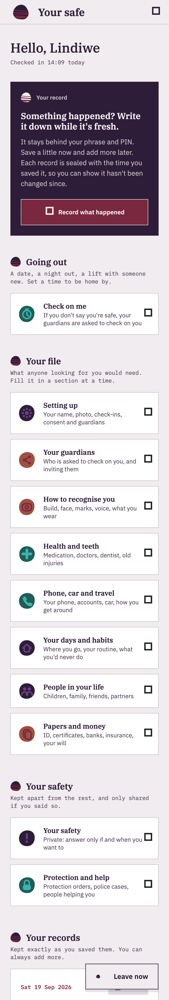
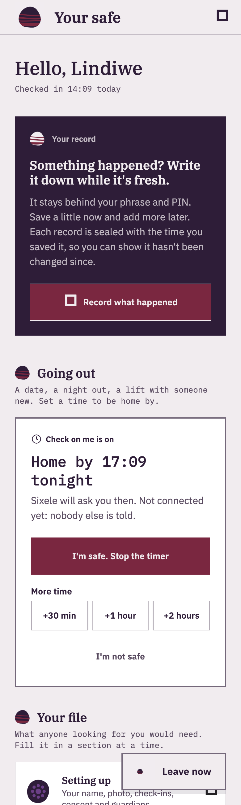

What it does
Two things, kept behind a phrase and a PIN only she knows.
A missing-persons file about herself
Everything police, search volunteers or her family would need to find or identify her — gathered while she is safe and calm, not pieced together later by frightened relatives.
Sign-up is six short pages, and only her name and her consent hold a page. The rest is filled in a section at a time, whenever she likes:

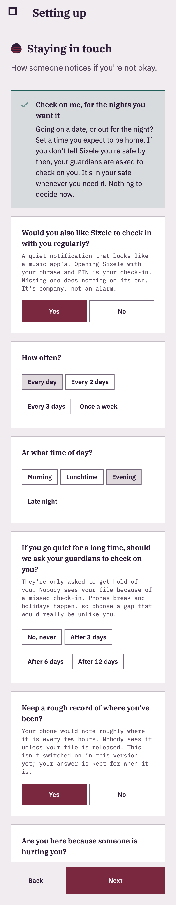
A sealed record of abuse
Dated, fingerprinted records of anything done to hurt her, kept in a form a magistrate or prosecutor can rely on. Quick taps come first, and she can seal it from any page — a little now, more later.
Each record is sealed the moment it is saved, with a fingerprint made from everything in it and from the record sealed before it. Every photo, recording and document carries its own. Records are never edited or deleted, only added to.
This makes tampering detectable, not impossible, and it is not a legal opinion on admissibility.
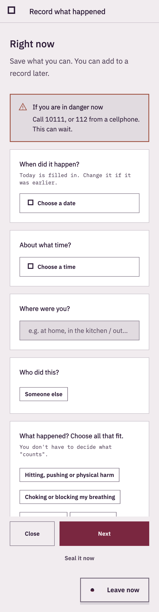
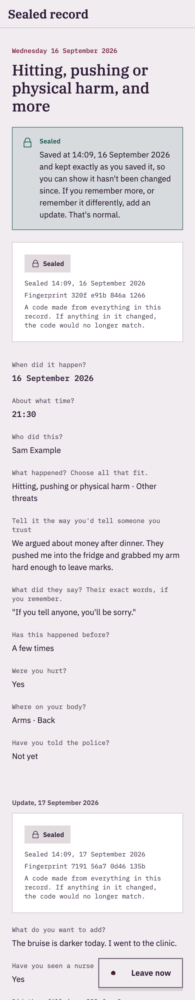
One report, of what she chooses
A single PDF — a missing person file, a record of abuse, or everything — made on her phone. It is the same document her guardians would receive, built from her consent.
The people helping her and her safety plan stay out of every report unless she switches them on for her own complete copy.
A report, once saved or sent, is outside her safe. The screen says so, and the file name gives nothing away.
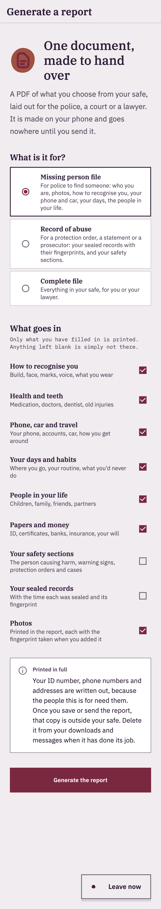
Check on me, and guardians
The people she trusts, asked only when they're needed.
Check on me
A timer for a date, a night out, a lift with someone new: a time to be home by, an optional plan, and what happens if she doesn't say she's safe.
Her guardians are asked to check on her, and after the hours she chose, two of them together can open her file. The plan is only seen if she doesn't say she's safe, and is deleted when she does.
Regular check-ins are company, not an alarm: a missed one does nothing on its own.
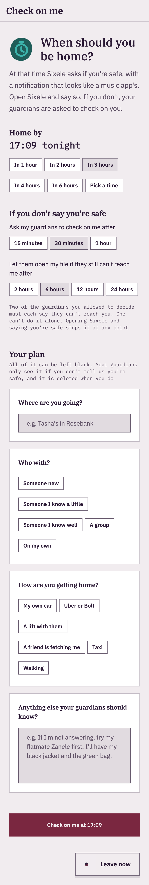
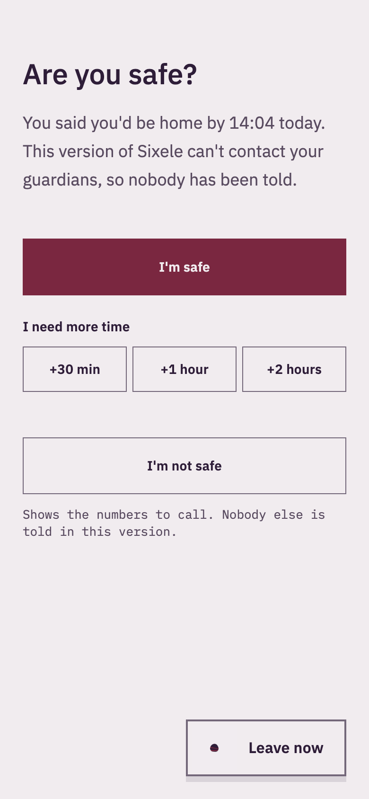
Guardians never install anything
An app on a guardian's phone is one more place the person she fears can find out. So a guardian is a phone number and a set of links. Each page opens from a message, names one guardian and one purpose, and keeps nothing on their phone.
She sends the invitation herself, on the channel she knows is safe for both of them, and its words name no app:
"I've chosen you as someone I trust with something important. When you have a quiet minute on your own, please open this."
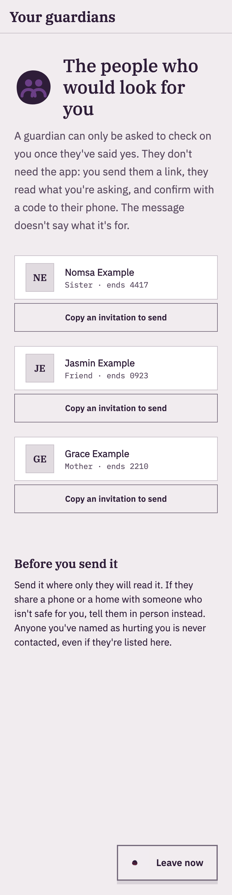
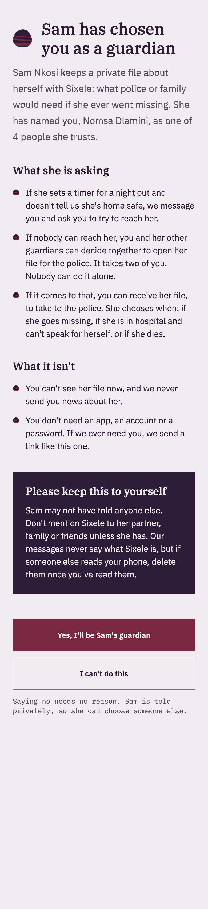
One guardian can't open her file alone
Two of the guardians she allowed to decide must each say they can't reach her. Opening Sixele and saying she's safe stops it at any point.
If her file is opened, a guardian confirms who they are first: her file holds her ID, her address and her photos, so we check who is reading.
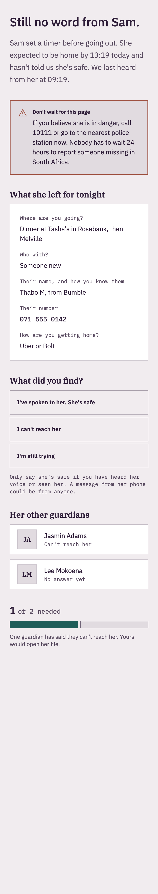
How it's protected
It is built for a phone someone else may pick up.
It looks like something else
On her phone the app has another name and a working front. Her safe opens only with her phrase and her PIN.
Leave now, on every screen
Pinned bottom-right throughout her safe: one tap back to the front, no confirmation.
Leaving the app locks it
Switching away closes every screen of her safe. A record she was part-way through is kept for when she comes back.
Nothing in the app switcher
Her safe never shows in the recent-apps view, and on Android screenshots of it are blocked.
No backups, no cloud copies
Nothing goes to phone backups, device transfer or a cloud keychain, where someone with her account could find it.
Guessing is slowed, never punished
After five wrong PINs there is a wait, and it doubles up to an hour. Nothing is ever wiped: that would let someone destroy her evidence by guessing on purpose.
She practises getting back in
There is no way to reset a forgotten phrase or PIN, so the first time she uses them is never the first time she needs them.
The keyboard never learns her phrase
Learning, suggestions and autocorrect are off wherever she types it.
Evidence is fingerprinted as it's added
Photos, recordings and documents are copied into the app's own storage and fingerprinted there, the moment she adds them.
How it speaks
The design system was written for small cracked screens, large text, and someone who may be frightened.
How far she has got is hers to know
No progress bars, step counts, word counts or anything "left to do". An empty section says only: "You can add to this at any time."
She is never asked to rate her own danger
No rating scales anywhere. Every question about abuse offers "Not sure" and "I'd rather not say".
Frightened screens carry one instruction
Recording what happened, and "Are you safe?", drop the brand entirely: no serif, no icons, one plain instruction.
Colour never carries meaning alone
A word and an icon always say it too. Status words are in sentence case, because capitals read as shouting.
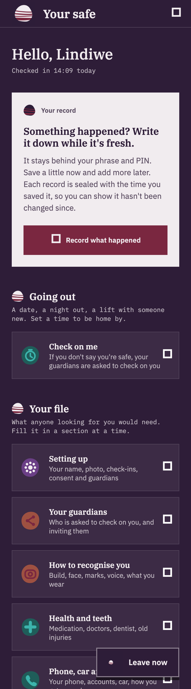
Where it stands
Sixele is being built. It is not in any app store, and nobody should trust it with anything that matters yet.
Alerts to guardians, Check on me monitoring and the locked copy of her file need a service that doesn't exist yet. The screens say so, as the screenshots here show.
Encrypting her file and records on the phone comes first. The South African facts in the helper text are to be confirmed by a practitioner, and the consent wording reviewed by a lawyer against POPIA.
In danger right now? Call the police.
- 10111 Police. Or 112 from any cellphone. It's free.
- 0800 428 428 GBV Command Centre, free, 24 hours. If you can't talk, dial *120*7867# and they'll call you back.
- 10177 Ambulance.
- 116 Childline, for anyone under 18.